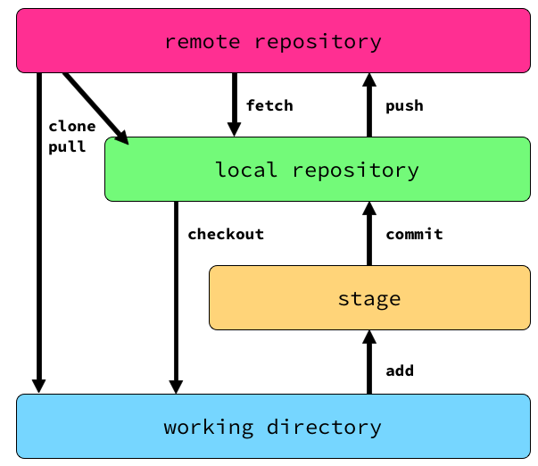

Git (bei REA)
02.09.2015 - Dennis Sänger <dsaenger@rea.de>Git ist..
- klein und schnell
- schnelles branching & merging
- opensource software
- hohe Datensicherheit
Git ist..
verteiltes Versionskontrollsystem

- jedes Repo kann Server und Client sein
- jeder besitzt lokale Kopie des gesamten Repos
- fast alle git operation sind lokal
- clients/server verwaltet git in
remotes
~/c/firmware ❯❯❯ git remote -v feat/render-label-obj ✱ ◼
gerrit ssh://172.16.26.50:29418/titan-firmware (fetch)
gerrit ssh://172.16.26.50:29418/titan-firmware (push)
origin ssh://git@rj-git.rea.de/titan-firmware.git (fetch)
origin ssh://git@rj-git.rea.de/titan-firmware.git (push)git verwaltet 3+1 Ebenen des Repositories
git verwaltet 4 Status für Dateien
- untracked
- modified
- staged
- unmodified / commited
commits
commit ist snapshot des aktuellen Zustands eines Projekts
repository besteht aus netz von commits
commits
Jeder commit hat mindestens einen parent-commit
commits
Jeder commit hat einen eindeutigen content hash (sha1)
titan-web ❯❯❯ git show --pretty=full 15b867e ⏎ feat/render-label-obj ✭ ✱ ◼
commit 15b867e2039fabd0e48d0a2aeec11778826e3127
Author: Dennis Saenger <dsaenger@rea.de>
Commit: Dennis Saenger <dsaenger@rea.de>
fix(nodedaemon): Starte nodedaemon mit relativem Pfad
Es gibt Probleme beim automatischen auflösen von Dependencies wenn der
nodedaemon mit einem absoluten Pfad gestartet wird.
diff --git a/titan-nodedaemon/debian/init.d b/titan-nodedaemon/debian/init.d
index beef61e..57cb393 100755
--- a/titan-nodedaemon/debian/init.d
+++ b/titan-nodedaemon/debian/init.d
...Befehlsübersicht
git repo erzeugen
über clonen eines vorhandenen repos:
git clone ssh://git@rj-git.rea.de/titan-firmware.gitoder durch erzeugen eines neuen repos:
mkdir neues-projekt
cd neues-projekt
git initadd & commit
modified Dateien zum Index hinzufügen:
git add path/to/file.txt
// ODER
git add -A .Datein im Index commiten:
git commitpush
Änderungen an ein remote schicken:
git push <remote> <branch>Beispiele:
git push origin master
git push origin lokaler-branch-name:remote-branch-name
git push origin HEAD:remote-branch-namebranching
git branch [-a] // anzeigen aller branches
git checkout -b branchName // neuen branch erstellen & auschecken
git checkout master // in bestehenden branch wechseln
git branch -d branchName // lokalen branch löschen
git push origin :branchName // remote branch löschenbranches sind nur Zeiger auf commits
fetch & pull
git fetch // lokales Repo aktualisieren
git merge another/branch // Änderungen in aktuellen Branch holen
git rebase another/branch // Änderngen in aktuellen Branch holen
git pull // = git fetch und git merge
git pull --rebase // = git fetch und git rebaseBei REA arbeiten wir immer mit rebase!
Änderungen rückgängig machen
git checkout -- path/to/file.txt // lokale Änderungen Rückgängig machen
git clean // untracked files entfernen
git reset --soft <hash> // zurücksetzen, Änderungen im Index
git reset [--mixed] <hash>// zurücksetzen, Änderungen nicht im Index
git reset --hard <hash> // aktuellen Stand komplett zurücksetzen
diff
git diff file.txt // diff zwischen working copy & index
git diff --cached [hash] file.txt // diff zwischen index und hash
git diff master..origin/master // diff zwischen brancheslog & grep
git log
git log origin/master
git log [<branch>] path/to/file.txt
git log hash1..hash2
git log --grep=foo // durchsucht commit message
git log -Gfoo // durchsucht commit diff
git log --grep='[fF]ix(es)? #' --perl-regexpgit grep foo.gitignore
❯❯❯ cat .gitignore feat/render-label-obj ✭ ✱ ◼
.DS_Store
*.log
build/**
node_modules/**submodule
andere git projekte in vorhandenes git projekt einbinden
submodule sind eigenständige git Repos mit eigenen commits, history, branches, ..
Hauptmodul verweist auf hash des submoduls
submodule
git submodule add ssh://git@rj-git.rea.de/titan-web.git titan-web
git submodule update [--init] // submodule auf aktuellen Stand bringennützlich:
git ls tree <hash> <path>firmware ❯❯❯ git ls-tree build/2926 titan-web feat/render-label-obj ✱ ◼
commit dd34152f99ca57dfb0d5983de01081bb475c6075 titan-webfirmware ❯❯❯ git ls-tree HEAD titan-web feat/render-label-obj ✱ ◼
commit ae2b0b2b79b920aea70ba5e5ac9806880b60e7ff titan-web